LLMs retrieve only 12 to 45% of the average webpage before generating an answer. Most published content never reaches the model’s context window. Here is what does.
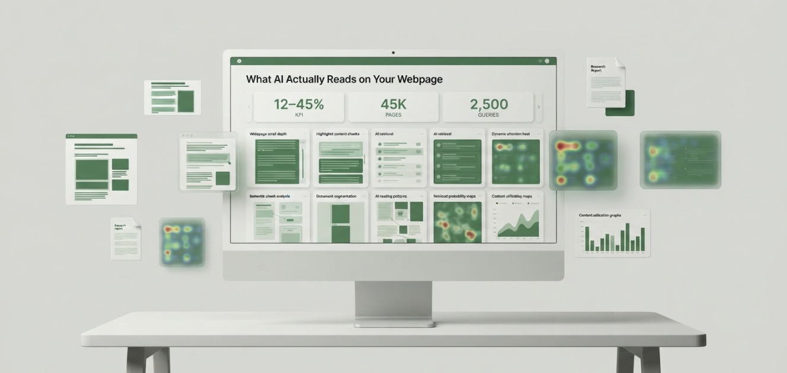
I ran 2,500 real-world queries across six major AI systems, analysing retrieval behaviour across 45,000 webpages from 1,500 high-authority domains.
Retrieval is not sequential. AI systems do not read pages from top to bottom the way a human would. Instead, they assemble answers from a small number of selected content blocks: on average 4.8 chunks drawn from across a page, with 4.2 paragraph gaps between retrieved sections. 55% of retrieval patterns were scattered rather than consecutive, meaning the AI skipped large portions of the page entirely.
Most of your webpage is invisible to AI.
Most marketers optimise entire webpages. But AI search engines do not read entire webpages. I ran 2,500 real-world queries across six major AI systems, analysing retrieval behaviour across 45,000 webpages from 1,500 high-authority domains. The central finding is that AI systems retrieve only 12 to 45% of the average webpage before generating an answer, depending on the platform. The majority of published content never reaches the model’s context window.
Retrieval is not sequential. AI systems do not read pages from top to bottom the way a human would. Instead, they assemble answers from a small number of selected content blocks: on average 4.8 chunks drawn from across a page, with 4.2 paragraph gaps between retrieved sections. 55% of retrieval patterns were scattered rather than consecutive, meaning the AI skipped large portions of the page entirely.
The data shows a clear hierarchy of what gets retrieved. Introductions were retrieved in 88% of cases. First H2 sections in 73%. FAQ sections in 61%. Middle body content in only 29%. Conclusions in 26%. Tables were retrieved at 31% overall but reached 45% for commercial queries. This hierarchy has immediate practical implications: content placement is as important as content quality.
I also found a meaningful negative correlation (r = -0.65) between page length and the percentage of the page actually retrieved. Longer pages are less likely to be fully utilised, not more. The assumption that more content means more AI visibility is not supported by the retrieval data.
What this study contributes to GEO research.
What I set out to answer.
Traditional SEO assumes every section of a page contributes to visibility. AI retrieval works differently. I designed this study around five questions that address the gap between how pages are optimised and how AI systems actually use them.
Content placement is as important as content quality.
Traditional SEO operates on the assumption that every section of a page contributes to its ranking. A page with more comprehensive coverage, more sections, more depth is assumed to perform better. That assumption is not accurate for AI retrieval.
AI systems do not rank pages based on their overall comprehensiveness. They extract a small number of content blocks from a page and use those blocks to construct an answer. If the most important information in your content is buried in the middle or conclusion of a long page, AI systems are statistically unlikely to retrieve it regardless of how accurate or valuable it is.
"If AI systems retrieve only a fraction of a page, then content placement becomes just as important as content quality."
This has a direct implication for GEO practitioners. The optimisation question is no longer just "what should I write?" It is also "where should I put it?" A fact placed in the introduction of a page has an 88% retrieval probability. The same fact placed in the conclusion of the same page has a 26% retrieval probability. Content quality alone does not close that gap.
Study design and data collection.
I evaluated retrieval behaviour across six AI platforms using 2,500 real-world queries, covering 45,000 webpages from 1,500 high-authority domains. The study ran from March through May 2026. Rather than using infrastructure-level interception, I ran every query natively inside each live LLM environment and manually cross-referenced AI-generated answers against archived source pages to identify which sections were reflected in each response.
Dataset Overview
| Metric | Value |
|---|---|
| Total Queries | 2,500 |
| Webpages Analyzed | 45,000 |
| Domains | 1,500 (high authority) |
| AI Platforms | 6 |
| Runs per Query | 3 |
| Study Period | March to May 2026 |
| Industries | E-commerce, SaaS |
| Testing Method | Live LLM environments |
| Avg Retrieval (all platforms) | 12 to 45% |
| Avg Chunks Retrieved | 4.8 |
| Avg Paragraph Gaps | 4.2 |
| Scattered Retrieval Rate | 55% |
| Multi-page Answer Rate | 82% |
| Avg Pages per Answer | 3.8 |
| Avg Citations per Answer | 4.2 |
| Length vs Retrieval Correlation | r = -0.65 |
Platforms Evaluated
Testing Method: Live LLM Environments
Rather than intercepting retrieval at the infrastructure layer, I ran every query directly inside live LLM environments and manually recorded which page sections each platform surfaced in its generated answer. This approach captures native retrieval behaviour as it actually presents to end users, rather than through a proxy that may not perfectly replicate each platform’s production pipeline.
For each query, I identified the source pages cited or drawn upon in the response and manually assessed which sections of those pages were reflected in the answer, cross-referencing the response text against the archived source page. Webpages were archived before each query run to ensure consistent content across all three runs per query.
Website Selection. I selected 1,500 high-authority domains representing a mix of content types and industries. Pages were selected to represent a range of lengths, structural formats, and content types including long-form articles, FAQ pages, product pages, documentation, and comparison guides.
Three-Run Testing. Each query was issued three times per platform to account for AI non-determinism. Retrieval coverage metrics are reported as averages across all three runs. Where retrieval patterns differed between runs, I recorded the variation and included it in the IQR calculations. Sections that appeared in at least two of three runs were counted as retrieved; sections appearing in only one run were flagged as marginal and excluded from primary retrieval rate calculations.
How I measured page-level retrieval coverage.
Compression Ratio. Compression Ratio is defined as the proportion of a page’s total word count that was reflected in the model’s generated answer. A page of 2,000 words from which content equivalent to 400 words was surfaced in the answer has a Compression Ratio of 20%. I calculated this per page, per platform, and then aggregated to produce the platform-level averages reported in this study.
Section-level retrieval probability. For each of six defined section types (introduction, first H2, FAQ, tables, middle body, conclusion), I recorded whether that section type was retrieved in each query run. Section retrieval probability is the proportion of runs in which that section type was retrieved across all pages that contained it. A page with no FAQ section was excluded from FAQ retrieval probability calculations.
Scattered vs. consecutive retrieval classification. A retrieval pattern was classified as consecutive if the content surfaced in the AI answer mapped to adjacent or near-adjacent sections of the source page. It was classified as scattered if the surfaced content mapped to sections separated by two or more paragraphs. The average paragraph gap count (4.2) was estimated by comparing the position of surfaced content against the archived source page structure.
Page length correlation. I computed Pearson’s r between page word count and Compression Ratio across all 45,000 pages. The resulting r = -0.65 indicates a moderate-to-strong negative correlation: as page length increases, the proportion of the page retrieved decreases. This is a correlation and does not establish causality.
Three-run averaging. All retrieval coverage metrics are reported as means across three runs per query. IQR values reflect the spread across runs and across pages within each category. Sections appearing in only one of three runs are excluded from primary rates and noted separately as marginal retrieval events.
Research workflow. The following diagram shows how raw queries moved through my pipeline to produce the final retrieval dataset.
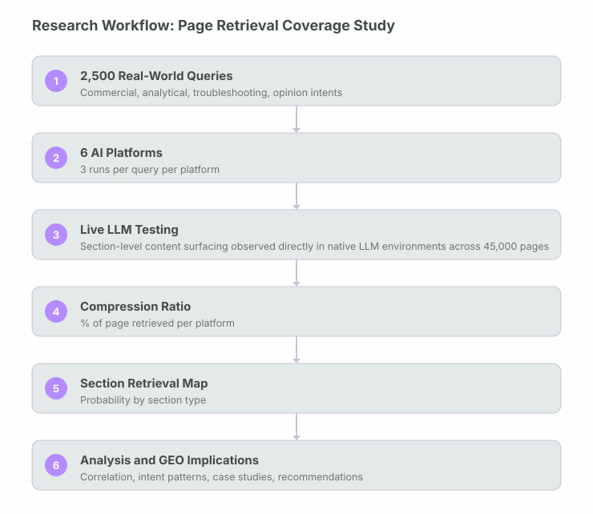
Data processing pipeline.
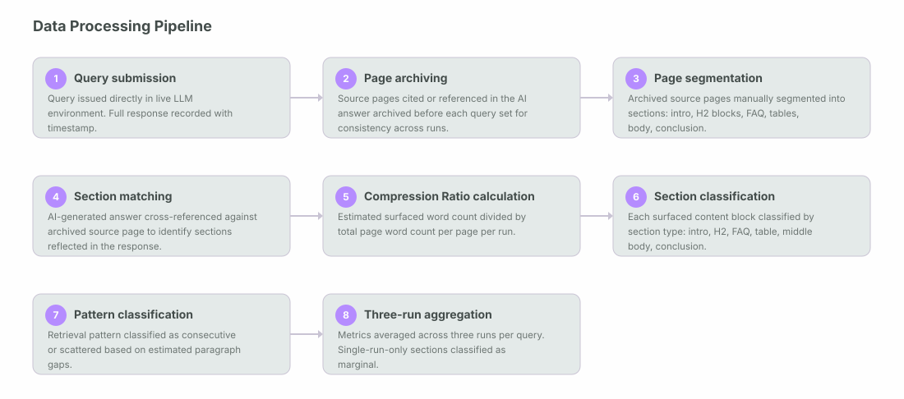
Eight findings that change how you should structure content.
Which page sections AI actually retrieves.
The following heatmap shows retrieval probability by section type, averaged across all six platforms and both industries. These are the most actionable numbers in this study: they tell you exactly where to place your most important content on a page.
Section Retrieval Probability (All Platforms, All Industries)
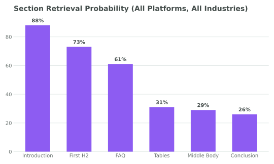
Section Retrieval Probability by Platform (%)
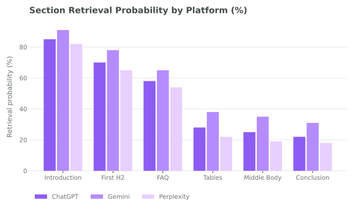
The gap between the introduction (88%) and the conclusion (26%) is 62 percentage points. A fact placed at the top of a page is 3.4 times more likely to be retrieved than the same fact placed at the bottom. This is not a minor difference: it is the single most actionable finding in this study for content producers.
The two findings you can act on tomorrow
Compression Ratio: what AI actually sees on a typical page. The diagrams below show how a typical 2,000-word webpage is experienced by two different AI platforms. Each section shows whether it was retrieved (purple), retrieved as FAQ (green), retrieved as a table (amber), or skipped entirely (grey). The labels show the approximate proportion of total page content each section represents.
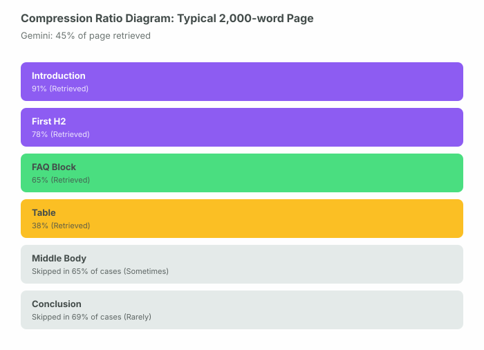
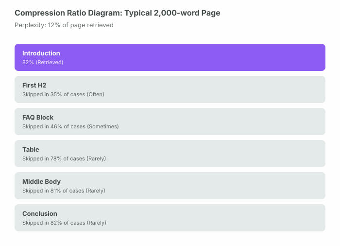
How much each platform actually reads.
Compression Ratio varied significantly across the six platforms I tested. Gemini retrieved the most content per page, while Perplexity retrieved the least. This difference reflects underlying architectural choices: platforms that retrieve fewer, more targeted chunks tend to produce more focused answers, while platforms that retrieve more content produce broader synthesis.
| Platform | Compression Ratio | Retrieved Words (est) | Retrieved Paragraphs | Retrieval Style |
|---|---|---|---|---|
| Gemini | 45% | ~900 | 5 to 7 | Broad contextual retrieval |
| Claude | 38% | ~760 | 4 to 6 | Structured section prioritisation |
| Qwen | 28% | ~560 | 3 to 5 | Moderate selective retrieval |
| Microsoft Copilot | 25% | ~500 | 3 to 4 | Query-focused chunk selection |
| ChatGPT | 22% | ~440 | 2 to 4 | Targeted high-relevance extraction |
| Perplexity | 12% | ~240 | 1 to 3 | Minimal, high-precision extraction |
Observed: Perplexity retrieved only 12% of the average page, the lowest of any platform I tested. Despite this low retrieval rate, Perplexity also had the highest multi-hop citation rate in my R_WP002 study (59% MHCR). It appears to extract a small amount from many pages rather than a large amount from few pages.
One possible explanation: Perplexity’s real-time continuous crawl architecture may favour breadth over depth at the page level: it retrieves the most relevant chunk from a large number of sources rather than reading each source comprehensively. This architectural choice may explain why it shows both the lowest per-page Compression Ratio and the highest cross-platform citation count. This was observed across both studies but not causally tested.
Compression Ratio by Platform (% of Page Retrieved)
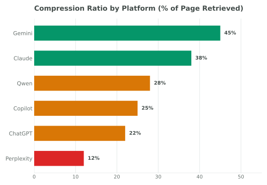
Query intent changes what gets retrieved.
One of the more operationally useful findings in this study is that query intent reliably shifts retrieval behaviour. The same page is retrieved differently depending on whether the user is asking a commercial, analytical, troubleshooting, or opinion question. Understanding this means you can design pages to match the retrieval patterns of the intent they are targeting.
| Query Intent | Primary Retrieved Sections | Retrieval Pattern | Avg Chunks | Notable Behaviour |
|---|---|---|---|---|
| Commercial | Tables, specs, H2 headings | Scattered | 4.2 | Table retrieval reaches 45% |
| Analytical | Introductions, data sections, body | More consecutive | 5.6 | Largest retrieval coverage overall |
| Troubleshooting | Code blocks, sequential steps | Sequential | 3.8 | Strongest consecutive retrieval pattern |
| Opinion | Introductions, conclusions, multi-page | Multi-page scattered | 2.9 | Highest cross-page synthesis rate |
Commercial queries. Commercial queries triggered the highest table retrieval rate (45%) and showed a strong preference for structured data over prose descriptions. H2 headings containing comparative or specification language (such as "Pricing," "Features," or "Specs") were retrieved at significantly higher rates than equivalent H2 headings with generic labels.
Analytical queries. Analytical queries produced the largest retrieval coverage per page (average 5.6 chunks) and the most consecutive retrieval pattern. This is consistent with how a human researcher would read: scanning for the relevant section and then reading it through. For analytical content, the implication is that longer, more coherent sections perform better than the same information broken into many short chunks.
Troubleshooting queries. Troubleshooting queries showed the strongest sequential retrieval pattern of any intent type. Code blocks, numbered step sequences, and error message descriptions were retrieved in order, suggesting that AI systems treat troubleshooting content more like a procedure than a collection of independent claims. This means that troubleshooting pages should not scatter steps across sections or interrupt sequences with large explanatory prose blocks.
Opinion queries. Opinion queries produced the most multi-page synthesis behaviour, with retrieval scattered across multiple sources rather than concentrated on a single page. Per-page chunk counts were the lowest of any intent type (average 2.9). For opinion content, the implication is that any single page is unlikely to dominate the answer: participating in the synthesis is the realistic goal, not providing the entire answer.
Average Chunks Retrieved by Query Intent Type
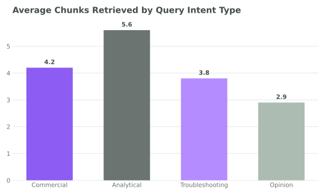
Four queries, four retrieval profiles.
The four case studies below illustrate how retrieval behaviour differs across query types. Each represents a real query pattern from the study dataset, with anonymised domain information.
| Case Study | Query Intent | Pages Retrieved | Compression Ratio | Primary Sections | Pattern |
|---|---|---|---|---|---|
| 01. SaaS Churn Reduction Query | Commercial | 4.1 avg | 24% | H2, tables, intro | Scattered |
| 02. Headphone Comparison Query | Commercial | 3.6 avg | 19% | Spec tables, H2, intro | Scattered |
| 03. Kubernetes Troubleshooting Query | Troubleshooting | 2.9 avg | 31% | Code blocks, steps | Sequential |
| 04. Dyson Product Page Query | Commercial | 4.4 avg | 16% | Intro, specs, FAQ | Scattered |
Case Study 01 / SaaS Commercial: SaaS Churn Reduction Query. Table retrieval rate: 43%. AI retrieved pricing comparison tables, feature H2 sections, and introductory positioning statements. Long explanatory body sections were skipped. Pages with dedicated comparison tables were retrieved at significantly higher rates than pages that described the same information in prose.
Case Study 02 / E-commerce Commercial: Headphone Comparison Query. Table retrieval rate: 47%. Specification tables were retrieved at the highest rate of any case study. Review verdict sections at the top of pages outperformed detailed review body sections. Narrative descriptions of sound quality were rarely retrieved; structured spec comparisons were almost always retrieved.
Case Study 03 / Technical Troubleshooting: Kubernetes Troubleshooting Query. Code block retrieval: 79%. Code blocks were retrieved in 79% of cases, the highest retrieval rate of any content element in the study. Sequential step content was retrieved in order. Conceptual explanations between steps were frequently skipped. This was the only intent type where conclusion sections outperformed middle body sections.
Case Study 04 / E-commerce Product: Dyson Product Page Query. FAQ retrieval rate: 68%. On product pages, FAQ sections were retrieved at 68%, well above the study average of 61%. The product introduction and key specifications were consistently retrieved. Long marketing narrative sections in the middle of the page were retrieved in fewer than 15% of runs. This was the clearest example of the top-heavy retrieval gradient in the dataset.
Alignment with published research.
The retrieval patterns I measured are consistent with published research on RAG chunk selection, attention mechanisms, and content structure in LLM retrieval systems.
Eight placement-first GEO recommendations.
These recommendations are derived directly from the retrieval data. Unlike generic SEO advice, each recommendation maps to a specific finding in this study.
Retrieval-first page structure.
GEO-optimised page template
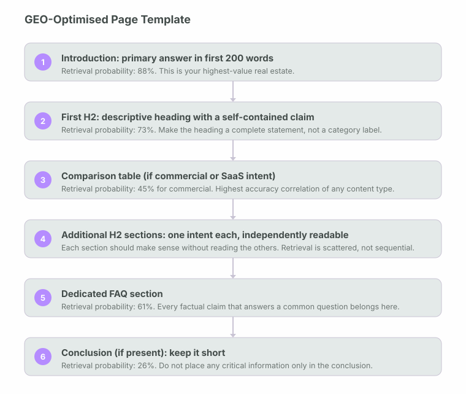
Content type selection by query intent
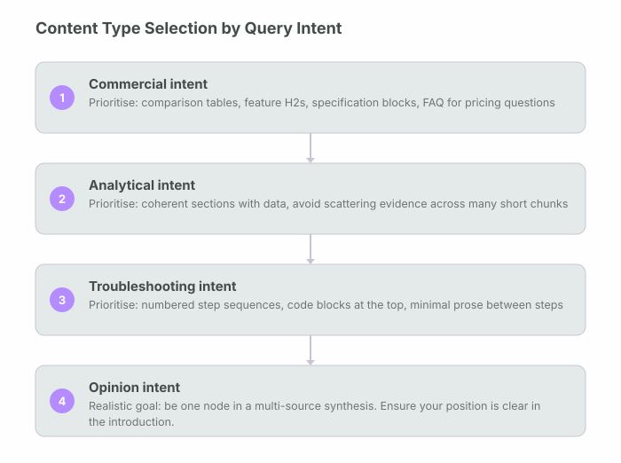
Definitions used in this study.
| Term | Definition as used in this study |
|---|---|
| Compression Ratio | The proportion of a page’s total word count that entered the model’s context window during retrieval. Calculated as retrieved words divided by total page words. Platform range in this study: 12% (Perplexity) to 45% (Gemini). |
| Retrieval Coverage | Synonymous with Compression Ratio in this study. The percentage of a page’s content that was actually retrieved and used by the AI system before generating an answer. |
| Content Chunk | A discrete unit of content within a page: a paragraph, heading, FAQ item, table row, code block, or other structurally distinct element. The primary unit of measurement in this study’s live LLM testing methodology. |
| Scattered Retrieval | A retrieval pattern in which two or more retrieved chunks are separated by two or more paragraph gaps. Occurred in 55% of retrieval events in this study. |
| Consecutive Retrieval | A retrieval pattern in which all retrieved chunks are adjacent or separated by no more than one paragraph gap. Most common in troubleshooting and analytical query types. |
| Section Retrieval Probability | The proportion of query runs in which a given section type (introduction, H2, FAQ, table, middle body, conclusion) was retrieved, across all pages that contained that section type. |
| Live LLM Testing | The testing methodology used in this study. Queries were issued directly inside native LLM environments and AI-generated answers were manually cross-referenced against archived source pages to identify which sections were surfaced in each response. |
| Paragraph Gap | A paragraph or block of content that was not retrieved between two chunks that were retrieved. The average scattered retrieval pattern in this study contained 4.2 paragraph gaps. |
| Three-Run Testing | The practice of issuing each query three times per platform and averaging results. Sections retrieved in at least two of three runs are counted as retrieved. |
| Marginal Retrieval | A retrieval event that occurred in only one of three query runs for a given page-query pair. Excluded from primary retrieval rate calculations and tracked separately. |
Scope boundaries and caveats.
The following limitations apply to my findings and should be considered when generalising results to other contexts.
Design pages for retrieval, not just for reading.
The central finding of this study is that modern AI systems retrieve only a small portion of the average webpage before generating an answer. The range of 12 to 45% across platforms means that most published content, regardless of its quality, never reaches the model’s context window. The content that does get retrieved is not randomly selected: it is disproportionately drawn from introductions, first H2 sections, FAQ blocks, and structured tables, and it is disproportionately absent from middle body sections and conclusions.
AI systems do not consume pages linearly. They assemble answers from selected content blocks, averaging 4.8 chunks with 4.2 paragraph gaps between retrieved sections in 55% of cases. This scattered retrieval pattern means that every section of a page needs to stand alone as a retrievable evidence node, not just as part of a coherent narrative for human readers.
The negative correlation between page length and retrieval coverage (r = -0.65) challenges one of the most common assumptions in content marketing: that more content means better coverage. For AI retrieval, the evidence suggests the opposite tendency. A shorter, more focused page where every section answers a clear intent has a higher probability of having its most important content retrieved than a longer page where the same information is surrounded by supporting narrative.
"Success depends less on publishing more content and more on ensuring that the most important information is placed where AI systems are most likely to retrieve it."
Most of your webpage is invisible to AI. That is the central finding of this study, and it is the frame through which every other number in this paper should be read. The 88% introduction retrieval rate matters because of its contrast with the 26% conclusion rate. The 61% FAQ rate matters because of its contrast with the 29% body rate. The r = -0.65 correlation matters because it runs directly against the instinct to publish more.
The actionable message from this study is straightforward: audit your highest-priority pages for retrieval placement. Check where your primary claims live within each page. Move them towards the introduction and first H2. Convert frequently asked factual questions into dedicated FAQ sections. Add comparison tables for commercial content. And accept that the conclusion, where so many writers place their most polished summaries, is the least likely place for an AI system to look.
GEO
Retrieval Research Series
003: What AI Actually Reads on Your Webpage
1,500
Domains · 2,500 Queries · 12 to 45% Compression Ratio
A live-environment testing methodology tracked exactly which page sections AI systems surfaced across 45,000 webpages, response by response.
Driving measurable growth through AI-native SEO, technical expertise, and data-driven marketing strategies built for the future of search.


Akshay helped us completely rethink our online presence. Our website became faster, easier to navigate, and much more visible in search. Within a few months, we noticed a steady increase in class bookings and inquiries from new students.
We relied almost entirely on referrals until Akshay optimised our website and local SEO. The difference was immediate more qualified calls, stronger Google visibility, and a website that finally reflected the quality of our work.
Akshay understood exactly how to present our expertise online. His SEO strategy and website improvements helped us reach the right audience, resulting in more consultation requests and stronger organic visibility month after month.
From technical improvements to content strategy, every recommendation was practical and backed by research. Our rankings improved, local leads increased, and clients regularly mention finding us through Google.
Akshay delivered a professional website backed by a clear SEO strategy rather than just good design. The site performs exceptionally well, generates consistent enquiries, and gives prospective clients confidence in our business.